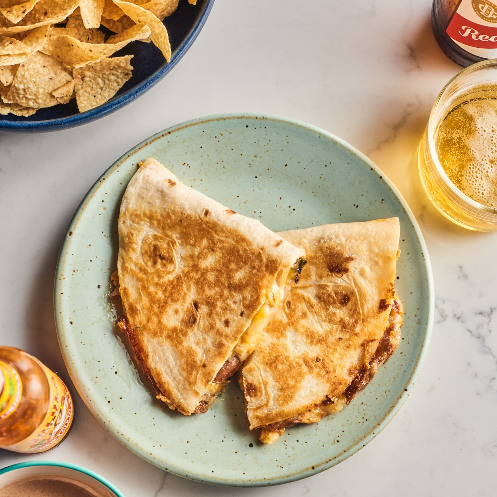

Chicken Quesadillas

Description
There's just something right about a quesadilla. It's easy to make and it's filling. Not the kind of filling in the quesadilla, the kind of filling that makes you not eat when you're bored before your next meal.
Ingredients
- 1 cup mayonaise
- 1/2 teaspoon taco seasoning
- 1/4 teaspoon garlic salt (with parsley flakes)
- 2 teaspoons hot sauce
- 6 tortillas
- 2 cups mexican cheese mix
- 2 cups shredded chicken, seasoned
Steps
- Whisk together mayo, taco seasoning, garlic salt, and hot sauce.
- Spread mixture on one side of tortilla. Sprinkle desired amount of shredded chicken on top, then cheese. Add sauce to a second tortilla and place on top.
- Heat in the microwave for about 20 seconds, then put on the stove, until nice and crisp.If you have sauce left, you can use it for dipping.